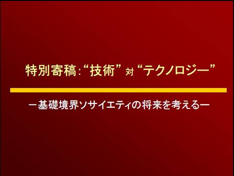

倫理関係
ここでは倫理関係の発表資料を置いています。画像をクリックすればPDFファイルを見ることができます。
| 2008年2月 : ESS 特別寄稿：“技術” 対“テクノロジー” －基礎境界ソサイエティの将来を考えるー |
|  |
| 2007年12月 : SITE 情報技術に向う姿勢-その基本の基本- |
| 2007年11月 : SITA2007 1978年に何が望まれたか，そして 2007年の今何が望まれているか。 |
| 2007年9月 : SITE 情報技術の人間学 －情報倫理の本丸－ |
| 2007年8月 : 講演会＠箕面（1） 個人情報保護法について -制定の背景を中心に- |

|
| 2007年8月 : 講演会＠箕面（2） 著作権保護について |
| 2007年8月 : 講演会＠箕面（3） 情報技術の人間学 －情報倫理へのプロローグ－ |
| 2006年10月 : 講演会 赤ん坊とテレビ |

|
暗号関係
ここでは暗号関係の発表資料を置いています。画像をクリックすればPDFファイルを見ることができます。